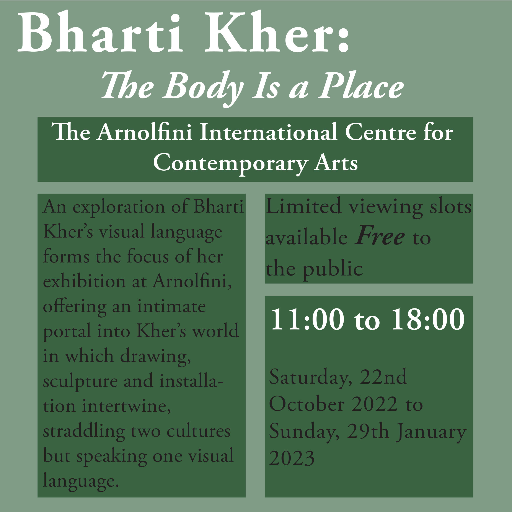
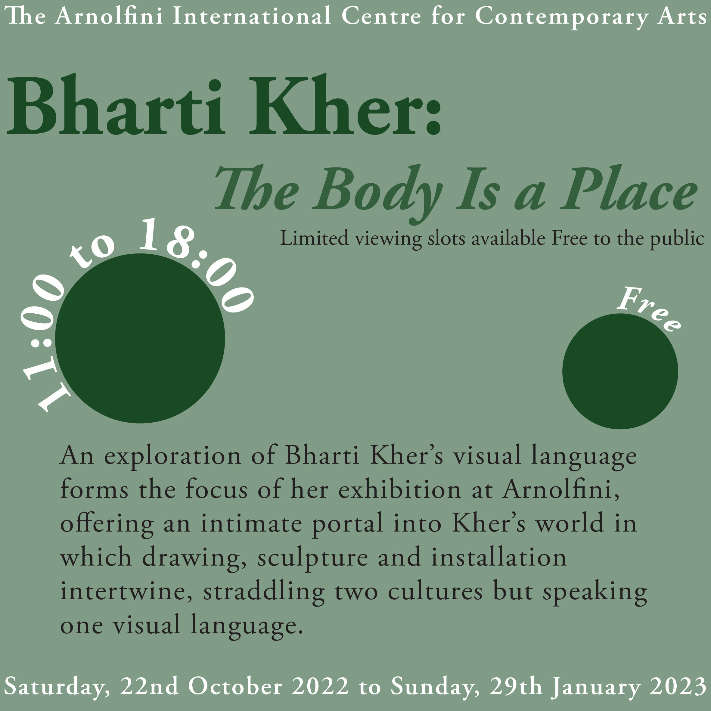

Typographic Systems Task
Overall
For my typographic systems task I chose the typeface ‘Adobe Garamond Pro’ as I believe it suits the content. I chose the shade of green as I wanted the reader to associate the event with ‘intimacy’ and sophistication. To create a juxtaposition I lowered the opacity for some of the features.
Axial
For my this design I started by placing the text in order of hierarchal importance, with the title and location towards the top. After this I added the rest of the text in contrasting locations,leaving white space. Finally I tilted design on its axis and also used a mixture of black and white font colours so that the information is clear to the reader. |
Bilateral
 |
The bilateral design is very simple, as the text needs to be centered. To make my poster more appealing, I added several features. For example, I used a rectangle at the bottom of the design in my chosen colour, which shows the audience the significance of the free entry. |
Dilatational
Similarly to the radial design, I featured a circle in this poster. A dilatational design uses text which is placed on a curve in comparison to radiating to a point. On my poster I added the extra information at the bottom of the circle, whilst the title is placed on top of the circle. I used the same colour for the font and circle to create a close juxtaposition. |
Grid
|  | The grid typographic system consists of columns and rows. To incorporate this in my design I used a range of different sized boxes, which helps to separate the information and makes it easier to understand. I placed the title at the top of the poster and used a large font size in order to create a clear focus. |
Modular
Whilst modular designs are similar to the grid design, it’s different through the use of repetition. In my design I used a green box, which is highlighted by a lower shade, which is repeated throughout the page. Unlike my other posters, I added the title into a box, but still kept the same style as the others as I wanted to keep my work consistent. |
Radial
 |
A radial design is created by using a focus point on the page and position the text from that point. I placed the centre of my point in the bottom left of the page, inside a circle so that the text radiates from it. This design was the most difficult for me as I didn’t want the paragraph to be too spread out, as this could make the poster confusing for the reader. |
Random
|  | The random typographic system means that there is no rule or theme, this means that a lot of designs can be messy and overcrowded. For my design I wanted to use a combination of elements from the other systems. I used dilatational and bilateral as the main components. Whilst many designs are chaotic, I wanted my poster to be consistent along with my other designs and keep on the minimal sign. Despite this, my design is still ‘random’ as it has no clear or consistent features. |
Transitional
 |
The transitional typographic system is made to look like layers of the Earth. Due to this, I created several layers and added text within each layer, which are all different shades. To also follow the transitional system, I used the type on a path tool in order to place the text in a ‘wave’ motion. |